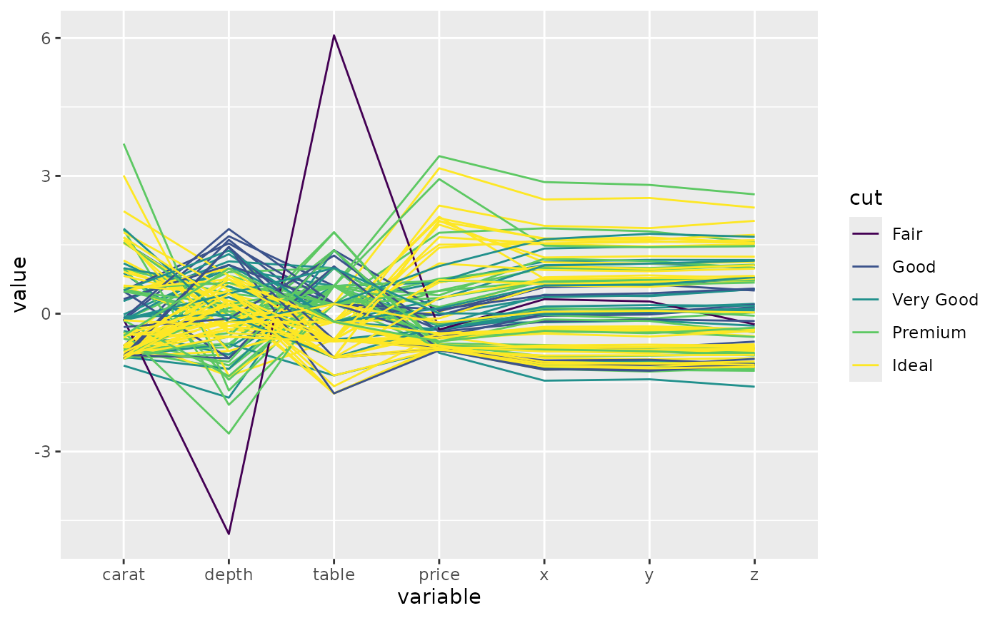
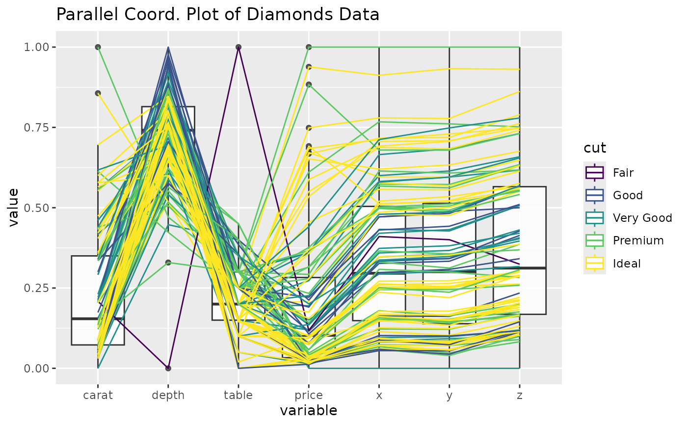
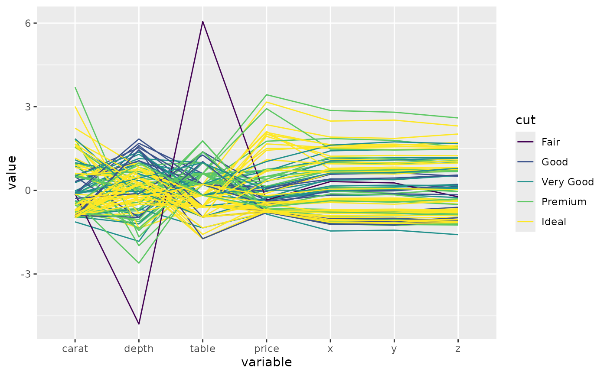
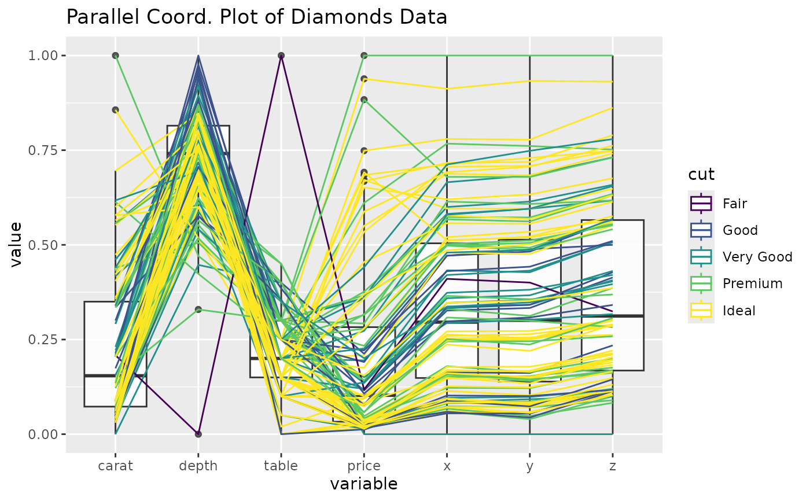
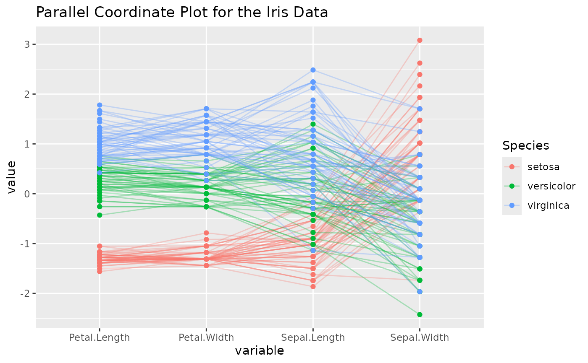
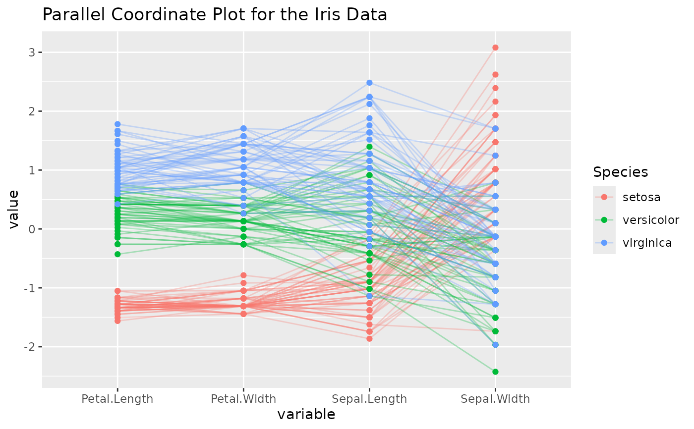

A function for plotting static parallel coordinate plots, utilizing
the ggplot2 graphics package.
Usage
ggparcoord(
data,
columns = 1:ncol(data),
groupColumn = NULL,
scale = "std",
scaleSummary = "mean",
centerObsID = 1,
missing = "exclude",
order = columns,
showPoints = FALSE,
splineFactor = FALSE,
alphaLines = 1,
boxplot = FALSE,
shadeBox = NULL,
mapping = NULL,
title = ""
)Arguments
- data
the dataset to plot
- columns
a vector of variables (either names or indices) to be axes in the plot
- groupColumn
a single variable to group (color) by
- scale
method used to scale the variables (see Details)
- scaleSummary
if scale=="center", summary statistic to univariately center each variable by
- centerObsID
if scale=="centerObs", row number of case plot should univariately be centered on
- missing
method used to handle missing values (see Details)
- order
method used to order the axes (see Details)
- showPoints
logical operator indicating whether points should be plotted or not
- splineFactor
logical or numeric operator indicating whether spline interpolation should be used. Numeric values will multiplied by the number of columns,
TRUEwill default to cubic interpolation,AsIsto set the knot count directly and0,FALSE, or non-numeric values will not use spline interpolation.- alphaLines
value of alpha scaler for the lines of the parcoord plot or a column name of the data
- boxplot
logical operator indicating whether or not boxplots should underlay the distribution of each variable
- shadeBox
color of underlying box which extends from the min to the max for each variable (no box is plotted if
shadeBox == NULL)- mapping
aes string to pass to ggplot object
- title
character string denoting the title of the plot
Details
scale is a character string that denotes how to scale the variables
in the parallel coordinate plot. Options:
std: univariately, subtract mean and divide by standard deviation
robust: univariately, subtract median and divide by median absolute deviation
uniminmax: univariately, scale so the minimum of the variable is zero, and the maximum is one
globalminmax: no scaling is done; the range of the graphs is defined by the global minimum and the global maximum
center: use
uniminmaxto standardize vertical height, then center each variable at a value specified by thescaleSummaryparamcenterObs: use
uniminmaxto standardize vertical height, then center each variable at the value of the observation specified by thecenterObsIDparam
missing is a character string that denotes how to handle missing
missing values. Options:
exclude: remove all cases with missing values
mean: set missing values to the mean of the variable
median: set missing values to the median of the variable
min10: set missing values to 10% below the minimum of the variable
random: set missing values to value of randomly chosen observation on that variable
order is either a vector of indices or a character string that denotes how to
order the axes (variables) of the parallel coordinate plot. Options:
(default): order by the vector denoted by
columns(given vector): order by the vector specified
anyClass: order variables by their separation between any one class and the rest (as opposed to their overall variation between classes). This is accomplished by calculating the F-statistic for each class vs. the rest, for each axis variable. The axis variables are then ordered (decreasing) by their maximum of k F-statistics, where k is the number of classes.
allClass: order variables by their overall F statistic (decreasing) from an ANOVA with
groupColumnas the explanatory variable (note: it is required to specify agroupColumnwith this ordering method). Basically, this method orders the variables by their variation between classes (most to least).skewness: order variables by their sample skewness (most skewed to least skewed)
Outlying: order by the scagnostic measure, Outlying, as calculated by the package
scagnostics. Other scagnostic measures available to order by areSkewed,Clumpy,Sparse,Striated,Convex,Skinny,Stringy, andMonotonic. Note: To use these methods of ordering, you must have thescagnosticspackage loaded.
Examples
# small function to display plots only if it's interactive
p_ <- GGally::print_if_interactive
# use sample of the diamonds data for illustrative purposes
data(diamonds, package = "ggplot2")
diamonds.samp <- diamonds[sample(1:dim(diamonds)[1], 100), ]
# basic parallel coordinate plot, using default settings
p <- ggparcoord(data = diamonds.samp, columns = c(1, 5:10))
p_(p)
 # this time, color by diamond cut
p <- ggparcoord(data = diamonds.samp, columns = c(1, 5:10), groupColumn = 2)
p_(p)

# underlay univariate boxplots, add title, use uniminmax scaling
p <- ggparcoord(
data = diamonds.samp, columns = c(1, 5:10), groupColumn = 2,
scale = "uniminmax", boxplot = TRUE, title = "Parallel Coord. Plot of Diamonds Data"
)
p_(p)
#> Warning: The following aesthetics were dropped during statistical
#> transformation: colour.
#> ℹ This can happen when ggplot fails to infer the correct grouping
#> structure in the data.
#> ℹ Did you forget to specify a `group` aesthetic or to convert a
#> numerical variable into a factor?

# utilize ggplot2 aes to switch to thicker lines
p <- ggparcoord(
data = diamonds.samp, columns = c(1, 5:10), groupColumn = 2,
title = "Parallel Coord. Plot of Diamonds Data", mapping = ggplot2::aes(linewidth = 1)
) +
ggplot2::scale_linewidth_identity()
p_(p)
# this time, color by diamond cut
p <- ggparcoord(data = diamonds.samp, columns = c(1, 5:10), groupColumn = 2)
p_(p)

# underlay univariate boxplots, add title, use uniminmax scaling
p <- ggparcoord(
data = diamonds.samp, columns = c(1, 5:10), groupColumn = 2,
scale = "uniminmax", boxplot = TRUE, title = "Parallel Coord. Plot of Diamonds Data"
)
p_(p)
#> Warning: The following aesthetics were dropped during statistical
#> transformation: colour.
#> ℹ This can happen when ggplot fails to infer the correct grouping
#> structure in the data.
#> ℹ Did you forget to specify a `group` aesthetic or to convert a
#> numerical variable into a factor?

# utilize ggplot2 aes to switch to thicker lines
p <- ggparcoord(
data = diamonds.samp, columns = c(1, 5:10), groupColumn = 2,
title = "Parallel Coord. Plot of Diamonds Data", mapping = ggplot2::aes(linewidth = 1)
) +
ggplot2::scale_linewidth_identity()
p_(p)
 # basic parallel coord plot of the msleep data, using 'random' imputation and
# coloring by diet (can also use variable names in the columns and groupColumn
# arguments)
data(msleep, package = "ggplot2")
p <- ggparcoord(
data = msleep, columns = 6:11, groupColumn = "vore", missing =
"random", scale = "uniminmax"
)
p_(p)
# basic parallel coord plot of the msleep data, using 'random' imputation and
# coloring by diet (can also use variable names in the columns and groupColumn
# arguments)
data(msleep, package = "ggplot2")
p <- ggparcoord(
data = msleep, columns = 6:11, groupColumn = "vore", missing =
"random", scale = "uniminmax"
)
p_(p)
 # center each variable by its median, using the default missing value handler,
# 'exclude'
p <- ggparcoord(
data = msleep, columns = 6:11, groupColumn = "vore", scale =
"center", scaleSummary = "median"
)
p_(p)
# center each variable by its median, using the default missing value handler,
# 'exclude'
p <- ggparcoord(
data = msleep, columns = 6:11, groupColumn = "vore", scale =
"center", scaleSummary = "median"
)
p_(p)
 # with the iris data, order the axes by overall class (Species) separation using
# the anyClass option
p <- ggparcoord(data = iris, columns = 1:4, groupColumn = 5, order = "anyClass")
p_(p)
# with the iris data, order the axes by overall class (Species) separation using
# the anyClass option
p <- ggparcoord(data = iris, columns = 1:4, groupColumn = 5, order = "anyClass")
p_(p)
 # add points to the plot, add a title, and use an alpha scalar to make the lines
# transparent
p <- ggparcoord(
data = iris, columns = 1:4, groupColumn = 5, order = "anyClass",
showPoints = TRUE, title = "Parallel Coordinate Plot for the Iris Data",
alphaLines = 0.3
)
p_(p)

# color according to a column
iris2 <- iris
iris2$alphaLevel <- c("setosa" = 0.2, "versicolor" = 0.3, "virginica" = 0)[iris2$Species]
p <- ggparcoord(
data = iris2, columns = 1:4, groupColumn = 5, order = "anyClass",
showPoints = TRUE, title = "Parallel Coordinate Plot for the Iris Data",
alphaLines = "alphaLevel"
)
p_(p)
# add points to the plot, add a title, and use an alpha scalar to make the lines
# transparent
p <- ggparcoord(
data = iris, columns = 1:4, groupColumn = 5, order = "anyClass",
showPoints = TRUE, title = "Parallel Coordinate Plot for the Iris Data",
alphaLines = 0.3
)
p_(p)

# color according to a column
iris2 <- iris
iris2$alphaLevel <- c("setosa" = 0.2, "versicolor" = 0.3, "virginica" = 0)[iris2$Species]
p <- ggparcoord(
data = iris2, columns = 1:4, groupColumn = 5, order = "anyClass",
showPoints = TRUE, title = "Parallel Coordinate Plot for the Iris Data",
alphaLines = "alphaLevel"
)
p_(p)
 ## Use splines on values, rather than lines (all produce the same result)
columns <- c(1, 5:10)
p <- ggparcoord(diamonds.samp, columns, groupColumn = 2, splineFactor = TRUE)
p_(p)
## Use splines on values, rather than lines (all produce the same result)
columns <- c(1, 5:10)
p <- ggparcoord(diamonds.samp, columns, groupColumn = 2, splineFactor = TRUE)
p_(p)
 p <- ggparcoord(diamonds.samp, columns, groupColumn = 2, splineFactor = 3)
p_(p)
p <- ggparcoord(diamonds.samp, columns, groupColumn = 2, splineFactor = 3)
p_(p)